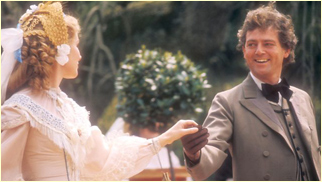
Episode 1:
The Duke of Omnium holds a garden party, unaware that various forces are at work which will have drastic implications on the lives of a number of his guests, including his nephew, Plantagenet Palliser, and Lady Glencora M'Cluskie.
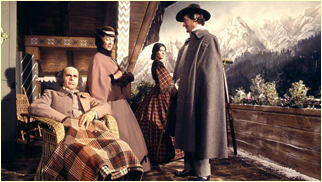
Episode 2:
The combined forces of the Duke and the Ladies Auld Reekie and Midlothian have proved too much for Glencora who marries Plantagenet. On their honeymoon, they see Burgo at a fencing school, but Glencora is unable to speak to him.
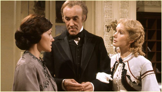
Episode 3:
Alice visits Glencora at Matching Priory and thwarts the Countess of Midlothian who tries to make her marry John Grey despite Alice's resistance. Glencora affects a cold to avoid attending Lady Monk's Christmas party and meeting with Burgo once again.
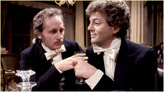
Episode 4:
After spending yet more money on his campaign, George wins the Chelsea by-election. Alice goes north to nurse her ailing grandfather. Glencora dances with Burgo at Lady Monks' ball but returns home with Plantagenet who is recalled from the House by Mr. Bott.
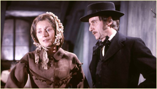
Episode 5:
George has been cut out of the inheritance by Squire Vavasor and he is chased by his creditors and disappears after fighting with John Grey. Meanwhile, Plantagenet has refused the post of Chancellor of the Exchequer and taken Glencora on a continental tour.
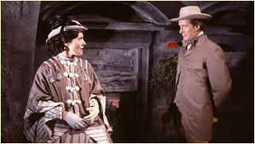
Episode 6:
Glencora sees Burgo once again in Baden-Baden. She asks her husband to offer him money. John Grey and Alice marry and Glencora gives birth to a healthy baby boy. Plantagenet waits to see if he will be offered the post of Chancellor of the Exchequer again.
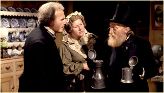
Episode 7:
Plantagenet is now Chancellor and Glencora enjoys herself as a political hostess. Lady Laura Standish disappoints Phineas Finn by marrying Kennedy, while Finn befriends her brother Lord Chiltern. Debt collectors chase Finn for a bill he signed for Laurence Fitzgibbon.
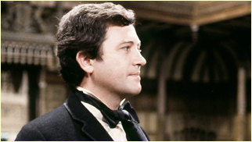
Episode 8:
Phineas Finn saves the lives of Lord Chiltern (thrown from his horse) and Kennedy (attacked in the street) and thus is further respected by Lady Laura. He makes a poor maiden speech in the House, is chased for Fitzgibbon's debt and meets journalist Quintus Slide.
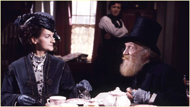
Episode 9:
Finn wins the Brentford seat at the election and has his debt paid by Aspasia Fitzgibbon. Torn over his love for Violet Effingham, he writes to Lord Chiltern who challenges him to a duel. Laurence Fitzgibbon (his second) returns to take him to Belgium for the duel.
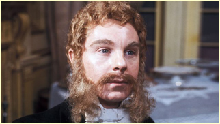
Episode 10:
The developing friendship between the Duke of Omnium and Madame Max has worried Glencora. Lord Chiltern injures Finn in the duel but they eventually make up. Violet rejects Finn's advances. Madame Max declines the Duke of Omnium's invitation to Como.
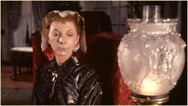
Episode 11:
Finn agrees to be engaged to Mary Flood. Madame Max refuses the Duke of Omnium's proposal after Glencora intervenes. Laura flees from the increasingly tyrannical Kennedy at the Duke's garden party while the Duke himself chokes on a glass of champagne.
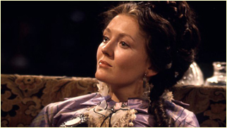
Episode 12:
While the Duke recovers slowly at Matching, Finn declines Madame Max's offer and returns to Ireland where he marries Mary Flood. Lizzie Eustace welcomes her cousin Frank to Scotland and asks him to help retain the diamonds which her new friends have now seen.
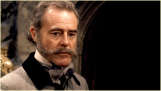
Episode 13:
On the journey back to London, the Eustace diamonds disappear after their apparent theft in Carlisle. Lizzie turns to Lord George for assistance while Lord Fawn is persuaded to ask for Madame Max's hand by his sister, Mrs. Hittaway. A court case beckons.
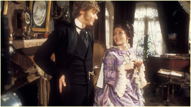
Episode 14:
The false friendship between Lizzie, Lord George and Mrs. Carbuncle collapses when Lizzie is accused of perjury. She is however proposed to by Rev. Emilius. Finn returns to parliament having been widowed but falls out with the bumptious trade secretary Mr. Bonteen.
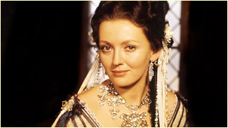
Episode 15:
Finn visits Laura in Dresden but the enraged Kennedy shoots at him. Quintus Slide once again reappears. The Duke of Omnium finally dies and leaves Madame Max a large fortune but she only accepts a single ring. Lizzie is now married to Rev. Emilius.
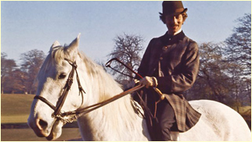
Episode 16:
Lizzie escapes from Emilius and stays with the Bonteens. Adelaide Palliser comes to London and Glencora introduces her to Lord Fawn but she takes a liking to Gerald Maule instead. Bonteen's advancement is halted by his poor behaviour at Glencora's dinner party.
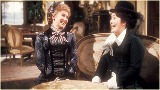
Episode 17:
Bonteen is furious at being passed over for Chancellor. He also travels to Prague and discovers that Emilius is a bigamist. Finn makes a rousing speech in the House. Lord Fawn proposes to Adelaide but is turned down. Bonteen is murdered after an evening at his club.
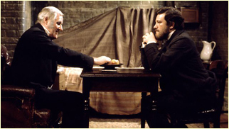
Episode 18:
Finn is arrested for the murder. Kennedy dies and leaves Laura a rich woman. Madame Max offers to cover the cost of Finn's lawyers and finds evidence which links the murder to Emilius. The Government vacillates as to hastening or delaying Finn's High Court trial.
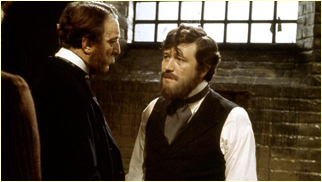
Episode 19:
Finn's trial is interrupted by the return of Madame Max from Prague where she has found a man who proves Emilius' guilt. Finn is asked to rejoin the Government and proposes marriage to Marie who accepts, but he also has to break the news to Laura.
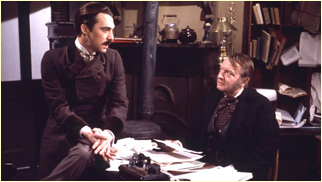
Episode 20:
A political crisis faces the country and a coalition government is formed with Plantagenet as the Prime Minister. Glencora reopens Gatherum Castle for all the entertaining that must be done. We meet the adventurer Ferdinand Lopez who is in pursuit of Emily Wharton.
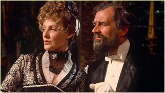
Episode 21:
Glencora tells her husband that Silverbridge has been sent down from Oxford. Lopez secures an invitation to the party at Gatherum where Glencora unwisely mentions this parliamentary vacancy. He saves Emily's brother's life and is allowed to propose marriage.
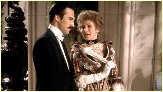
Episode 22:
Lopez and Emily have married and are in Rome: she is pregnant. As Plantagenet will not support any candidate at the by-election, Lopez loses. He blames his failure on Glencora who has 'cut' him. Lopez now takes his version of the election expenses story to Quintus Slide.
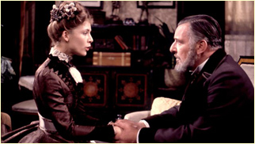
Episode 23:
Plantagenet has paid Lopez's election expenses but it becomes clear that so has Emily's father. Finn's speech in the House paints a candid picture of Lopez who is then banned from his club and loses his future position in Guatemala. He commits suicide under a train.
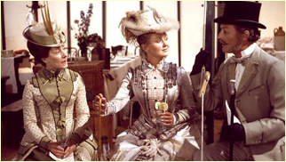
Episode 24:
The Government is in disarray and it appears that Plantagenet's time as Prime Minister must come to an end. Lady Mabel Grex declines Silverbridge's offer of marriage. Playing cricket, he meets Isabel Boncassen who appears much more interested in his charms.
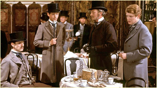
Episode 25:
Despite turning him down, Mabel views Isabel's effect on Silverbridge with concern. He also loses a fortune on his horse, 'The Prime Minister', at the Derby which may have been manipulated by Major Tifto. Lord Gerald, after attending the race, is sent down from university.
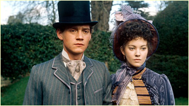
Episode 26:
Glencora's two sons are summoned to her bedside after she collapses. Following her funeral, Plantagenet must decide whether to assist or forbid his children's happiness in their choice of matrimonial partners. With Marie's help he makes his decision.